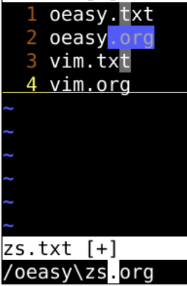
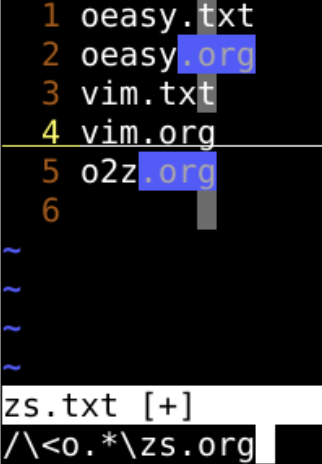
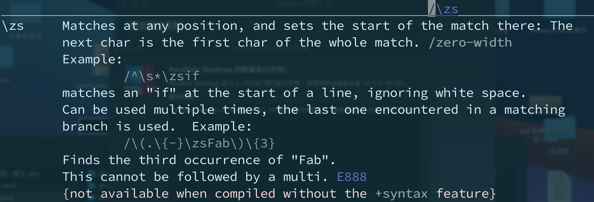
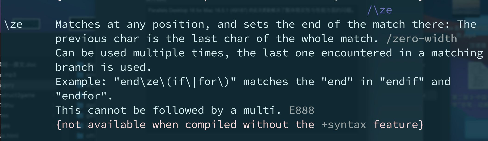
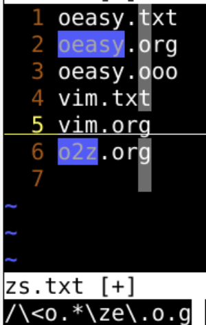
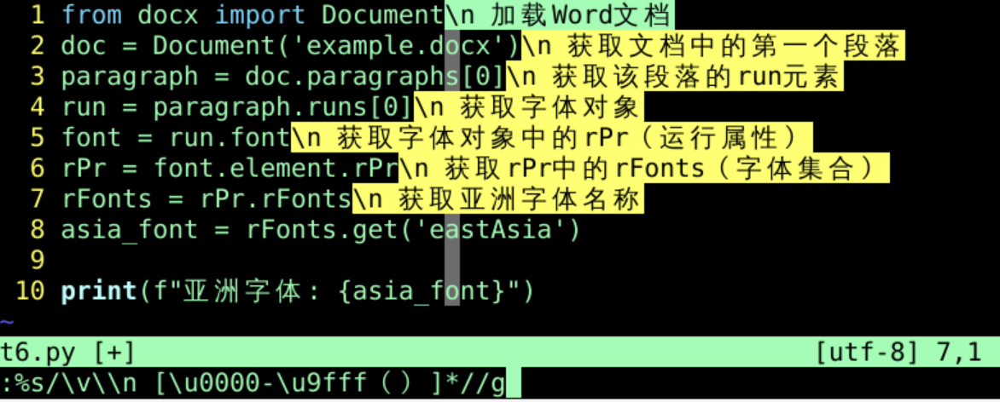

]c 下一条修改[c 上一条修改]m 下一条修改[m 上一条修改vi -o o1 o2:windo normal Ioeasywindo 所有窗口都执行normal 进入普通模式Ioeasy 插入oeasy:windo normal owindo 所有窗口都执行normal 进入普通模式o 换行:windo normal "%pwindo 所有窗口都执行normal 进入普通模式"%p 粘贴各自文件名:windo %s/oeasy/o2z/gwindo 所有window窗口都进行%s/oeasy/o2z/g 把 oeasy 替换为 o2z:wqall 全部保存range，这个指的是window编号:1,3windo normal Ioeasy|隔开各个命令:windo %s/oeasy/o2z/g｜ %s/o2z/o3z/g:windo set nolist nofoldcolumn | colorscheme bluewindobuffer执行命令:bufdo %s/oeasy/o2z/g｜ %s/o2z/o3z/g:bufdo %s/oeasy/o2z/g｜ %s/o2z/o3z/g|update 自动更新:ls、:buffers 查看当前的buffers列表:bd1、:bd o2z.txt 可删除bufferse .可打开新的buffer缓冲:b1选择缓存:argdo %s/oeasy/o2z/g｜ %s/o2z/o3z/g:args *.c :argdo set ff=unix | update.c或.h文件，批量替换并更新:args *.[ch] :argdo %s/\<my_foo\>/My_Foo/ge | update:args查看相应的参数列表:argd删除参数:arga添加参数vi **/*.html:args:argdo %s/<img src=\"\(.\{-}\)\" title=\"\(.\{-}\)\" \/>/[!\2]\1 | update:argdo %s/<a href=\"\(.\{-\})\">\(.\{-\}\)<\/a>/[\2]\1/g | update:%s/<h1>\(.*\)</h1>/- \1/gc:%s/<h2>\(.*\)</h2>/ - \1/goeasy.org 替换为 oeasy.iovim.org 不替换
/oeasy\zs.orgoeasy 的 .org:%s/oeasy\zs.org/.io/goeasy的 .org换成 .io:%s/\<o.*\zs.org/.io/go 为单词开头的 .org 都替换
:argdo %s/\<o.*\zs.org/.io/g | update
/^\s*\zsif/\(.\{-}\zsFab\)\{3}Fab
end\ze\(if\|for\)endif 和 endfor 中的 end
\<o.*\ze\.o.go 开头的o 什么 g 的:bufdo %s/\<o.*\ze\.o.g/ooo/go 开头的、后面跟 o 什么 g 的单词都换成 ooobuffers
:windo:bufdo:argdo{cmd}可以用｜按顺序增加windowsbuffersargumentszszewindow 窗口容器80*24 的屏幕资源很快就用完了